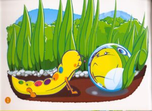
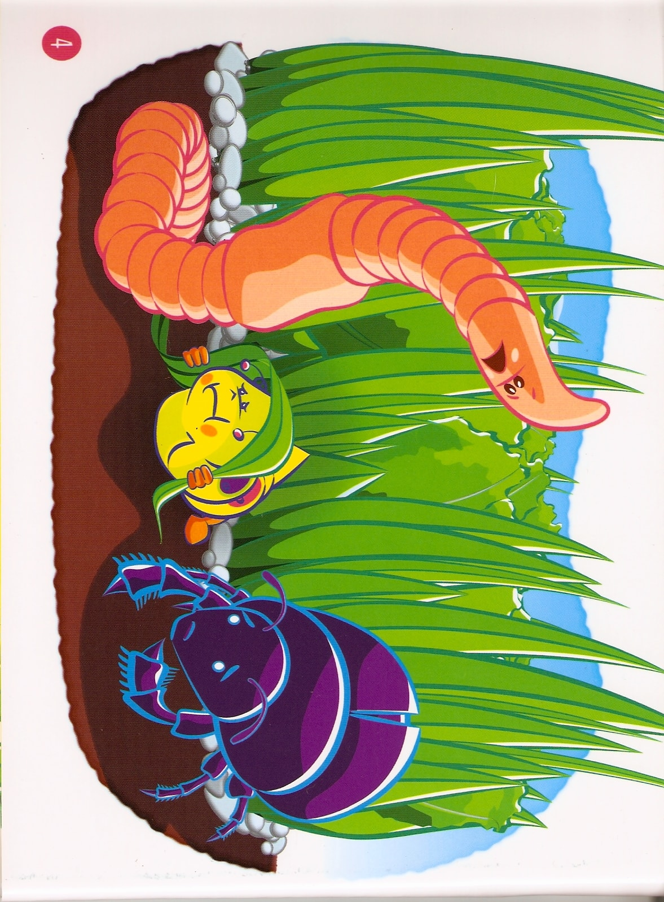
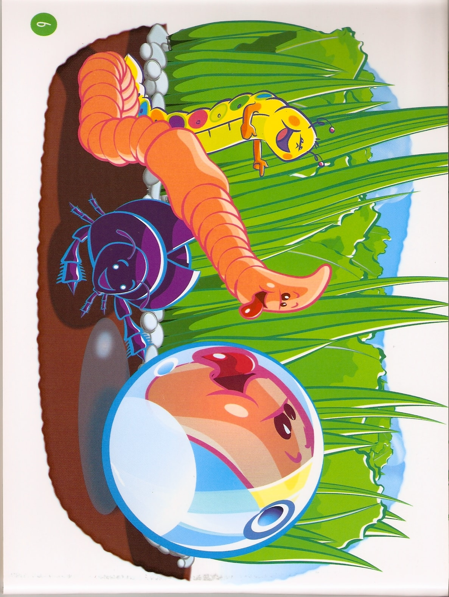

<?xml version="1.0" encoding="UTF-8"?><rss version="2.0"
	xmlns:content="http://purl.org/rss/1.0/modules/content/"
	xmlns:wfw="http://wellformedweb.org/CommentAPI/"
	xmlns:dc="http://purl.org/dc/elements/1.1/"
	xmlns:atom="http://www.w3.org/2005/Atom"
	xmlns:sy="http://purl.org/rss/1.0/modules/syndication/"
	xmlns:slash="http://purl.org/rss/1.0/modules/slash/"
	>

<channel>
	<title>Children&#8217;s stories &#8211; Bookpeg</title>
	<atom:link href="https://www.bookpeg.com/category/stories/childrens-stories/feed/" rel="self" type="application/rss+xml" />
	<link>https://www.bookpeg.com</link>
	<description>A good place to hang your favourite reads</description>
	<lastBuildDate>Fri, 13 Nov 2020 16:02:20 +0000</lastBuildDate>
	<language>en-US</language>
	<sy:updatePeriod>
	hourly	</sy:updatePeriod>
	<sy:updateFrequency>
	1	</sy:updateFrequency>
	<generator>https://wordpress.org/?v=6.9.1</generator>
<site xmlns="com-wordpress:feed-additions:1">26705072</site>	<item>
		<title>Flexi and the Glass Bead</title>
		<link>https://www.bookpeg.com/flexi-and-the-glass-bead/</link>
		
		<dc:creator><![CDATA[admin]]></dc:creator>
		<pubDate>Wed, 11 Nov 2020 16:38:32 +0000</pubDate>
				<category><![CDATA[Children's stories]]></category>
		<guid isPermaLink="false">http://www.bookpeg.com/?p=15</guid>

					<description><![CDATA[The following illustrated story was published by &#8216;Pampers&#8217; to promote the sale of a new product. The images are by]]></description>
										<content:encoded><![CDATA[
<p><em>The following illustrated story was published by &#8216;Pampers&#8217; to promote the sale of a new product. The images are by Fabrizio Cali (a Maltese Artist) and the text is by Ursula West.</em></p>


<p class="has-white-color has-vivid-green-cyan-background-color has-text-color has-background" style="font-size:26px">Once upon a time, Flexi the Caterpillar, thought he was the ugliest, silliest, insect in the whole garden.</p>


<div class="wp-block-media-text alignwide is-stacked-on-mobile"><figure class="wp-block-media-text__media"></figure><div class="wp-block-media-text__content">
<p class="has-medium-font-size">He looked into the glass bead which had fallen into his cabbage patch and shook his head.</p>


<p class="has-medium-font-size">Flexi stuck his nose right against the glass and his nose looked <strong>HUGE!</strong> <br>&#8220;Ooh!,” he squealed and jumped back.<br> “I look terrible!”</p>
</div></div>


<div class="wp-block-media-text alignwide is-stacked-on-mobile"><figure class="wp-block-media-text__media"></figure><div class="wp-block-media-text__content">
<p class="has-medium-font-size">Flexi moved slowly out of the cabbage patch with his head nearly touching the ground. <br>“What’s wrong with you?” chirped Quigly the worm. Belinda the beetle scurried over to see what was happening.<br>Flexi lifted his head and dared to look at them. “I’m ugly,” he said.<br>“Who told you that?” squeaked Belinda.<br>“The glass ball in my cabbage patch.”<br></p>
</div></div>


<p class="has-text-align-center has-black-color has-light-green-cyan-background-color has-text-color has-background has-medium-font-size">Quigly looked at Flexi – let’s see this ball! How dare it say such a thing to you.”<br>Belinda, the beetle, ran into the cabbage patch and returned with the glass bead – pushing it in front of her head. She was laughing very loudly.</p>


<p class="has-medium-font-size">Flexi looked at Belinda and then he looked at her image in the round glass ball. Now he understood.<br>Her face looked so silly and out of shape.</p>


<p class="has-medium-font-size">“Oh!” he said softly, “so that was not really me!” And he burst out laughing.</p>


<div class="wp-block-media-text alignwide is-stacked-on-mobile"><figure class="wp-block-media-text__media"></figure><div class="wp-block-media-text__content">
<p class="has-medium-font-size">They all took turns to make funny faces in the glass ball and had a great time, laughing and laughing till the sun went down. Then it was time for all of them to go to bed.</p>
</div></div>


<div class="wp-block-group"><div class="wp-block-group__inner-container is-layout-flow wp-block-group-is-layout-flow">
<p><br></p>
</div></div>


<p></p>
]]></content:encoded>
					
		
		
		<post-id xmlns="com-wordpress:feed-additions:1">15</post-id>	</item>
	</channel>
</rss>
